Basics
Navigation
Move view in sketch - middle mouse
Move node -left mouse
Zoom in/out - mousewheel or ctrl +/-
Windows
Datatypes/IOBoxes - dbl right click
Nodebrowser - dble left click
Pop-up menu - right click
Create frame around nodes - alt + select nodes
Show tree view of program - ctrl j
Nodes
Insert node - dbl click wire
Delete a wire - middle click or left click wire and delete
To align multiple nodes vertically - mark multiple lines + ctrl + L
Align node to horizontally - alt + L
Expose IOBox from input/output - click in-/output + middle click
Show value of a wire as pad - dbl right click on wire
Reset node - alt + right click node
Creating In-/Outputs Pins in nodes - ctrl + dbl left click
Make multiple connections from one output - middle click output and middle click inputs
Alternative to middle click is alt+l-click
Exchange already connected node with new - dbl clicknode - reset category on the bottom right.
Insert node in between other nodes. - dbl click line
Create Own Node
To create own node we write the name of the node in the nodebrowser and then node.
To go inside the node middle click
Assign input
To assign a type for the input/output of the node we ether can right click and configure a type or we plug the desired data type into the input/output
Values
Changing values - right mouse drag
More precise changes - shift + right mouse drag
Type in Values - right click
Reset values pin - alt + right + click pin
Write a comment - open node browser, start with space and then just write in search field
Nodes
Nodes with a light gray top and bottom border have a state - memory.
Run Patch
F8 - Stop patch
F5 - Run patch
Basic fundamentals
Every input can only hold one connection
Data types
In the nodebrowser under IOBox you can find all the basic data types you can use in vvvv.
Another way to reach the window is double right click
You can drag the nodes with the left mouse button and you can change and set the values with the right mouse click and/or drag
Booleans
Booleans are true(1) and false(0) values.
There are three IOBoxes
- Bang - Triggers only one frame - like a one on impulse
- Toggle - Toggles the boolean value like a light switch
- Press - Outputs true as long as it is hold down
Invert Boolean value
With NOT node we can invert the value of a Boolean
Integer
For a single Integer value you can use the Integer32 IOBox.
Vector 2/3
Datatype that consists of two/three float values like x,y,z
Color
RGBA
Color datatype that consits Hue,Saturation,Value,Alpha
Changing value - right click drag up/down
Changing hue - right click drag left/right
Changing saturation - ctrl right click drag up/down
Changing alpha - shift drag up/down
We also can set color by typing in color name or hex code
ffff00
Get Compliment Color
Compliment Node
HSL
Convert from number to color with FromHSL node.
String
String datatype to hold text
Path
Path points to a data folder on your computer.
Look also here
Circle & Rectangle
VVVV has Circle and Rectangle as a special data type build in natively. We can use them to create abstract shapes which allow us for example to detect if shapes intersect with each other.
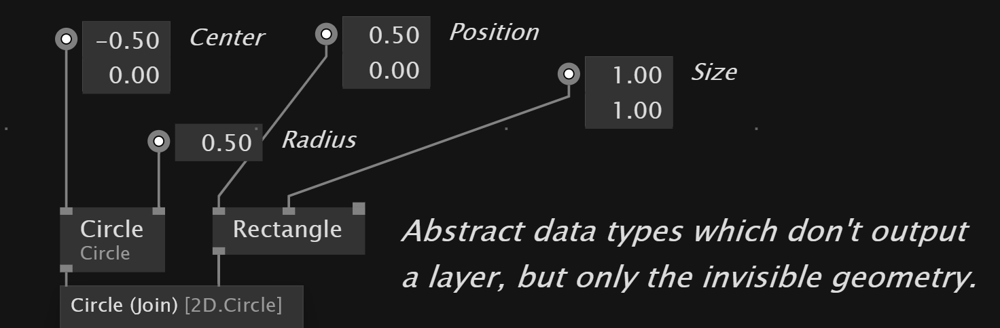
Matrix
For the transformation of objects in 3D and 2D vvvv has the data type Matrix
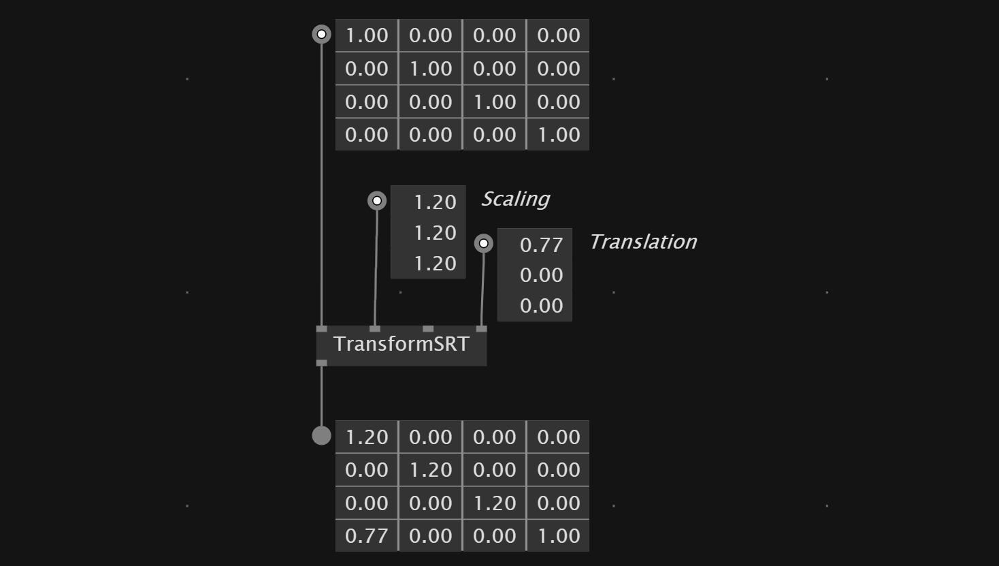
Nodes and Pins
To see how you can connect nodes in vvvv you can hover the mouse over the in-/outputs of the node. They show you the datatype necessary.
If a value has been changed and is different from the default value it's pin extends to a square.
With the middle mouse click we can expose IOBoxes of the parameters of the nodes.
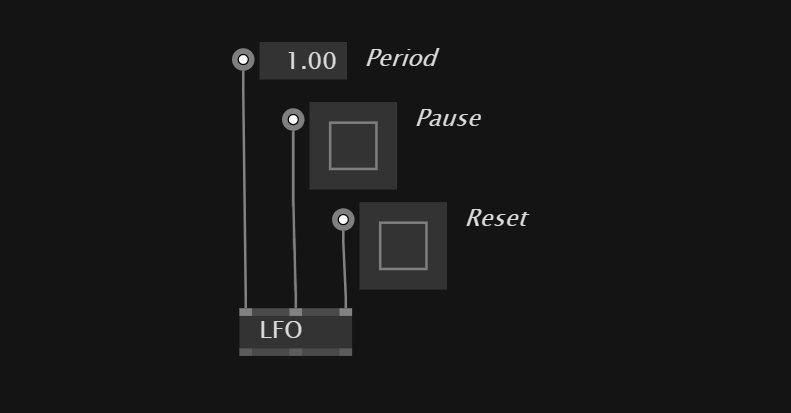
VVVV has notes that can be used for multiple data types. They are called Adaptive Nodes.
These nodes expect the data type T.
Adaptive nodes need to be connected to IOBoxes get get activated.
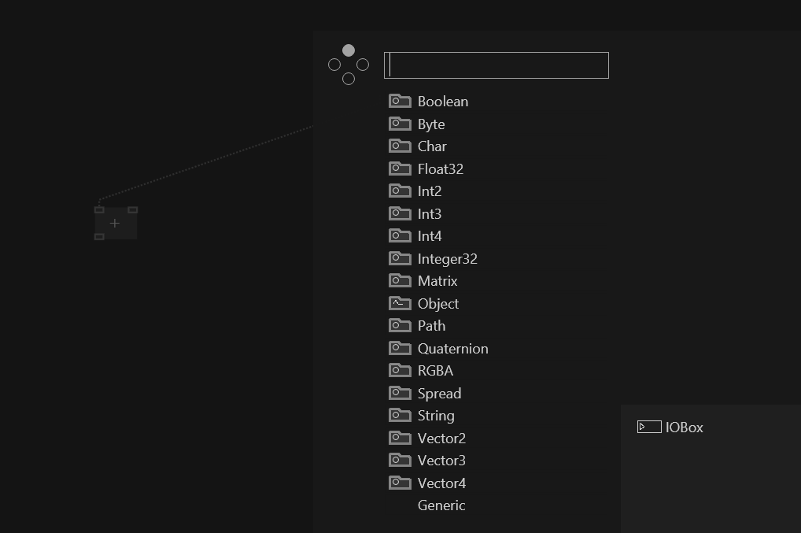
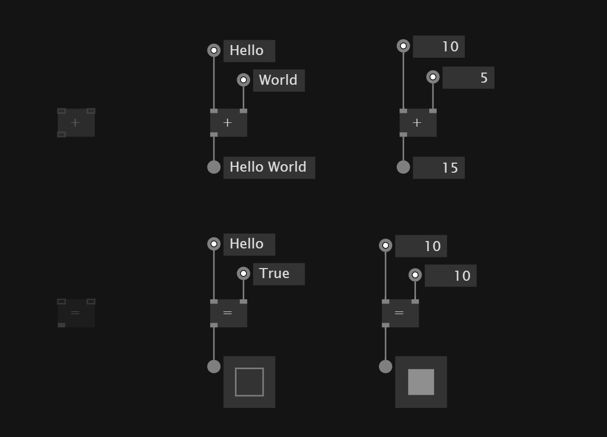
Some nodes that are pin groups so there inputs can be extended with ctrl +/-
Reset values of IOBox
To reset the value of an IOBox we can hold down alt + right click
Switch between values
With the switch node we can use a control integer value to switch between different values.
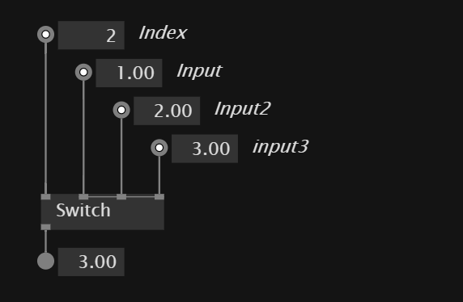
Math
For math operations VVVV has multiple node for the classic math operations.
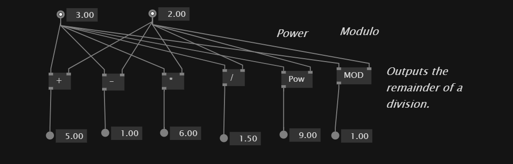
Rounding
With Floor,Ceil and Round node's we can route values to our liking.
Comparison
VVVV has nodes for the comparison of values
= != < > <= >=
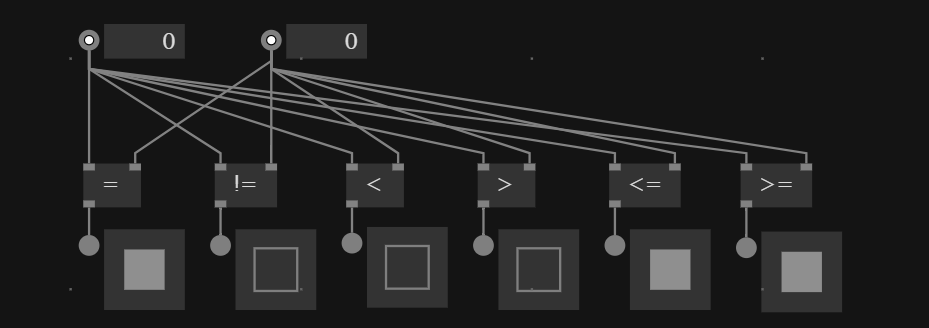
We also can use IsOdd and IsEven nodes
to check if value is odd or even.
Random
The random node allows to output a random value from inside a range.
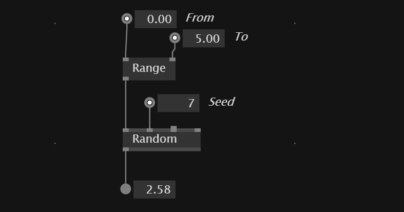
There is also the advanced Random(FromTo) node.
Conversion Nodes
In vvvv the conversion of types happens automatically when no information get's lost through the conversion.
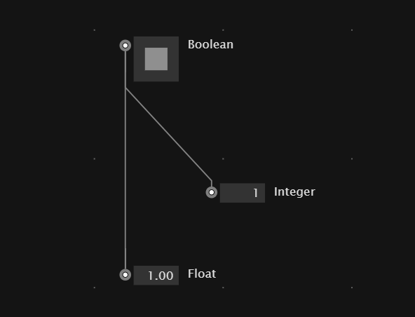
The other way around - from data types with more information to data type with less information can't be connected that easily
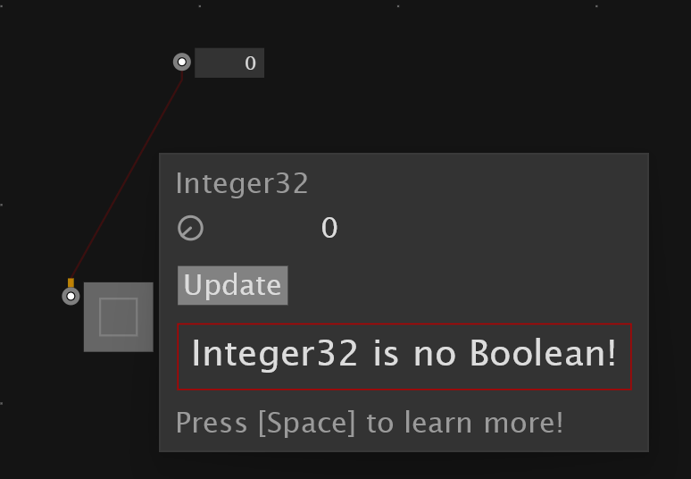
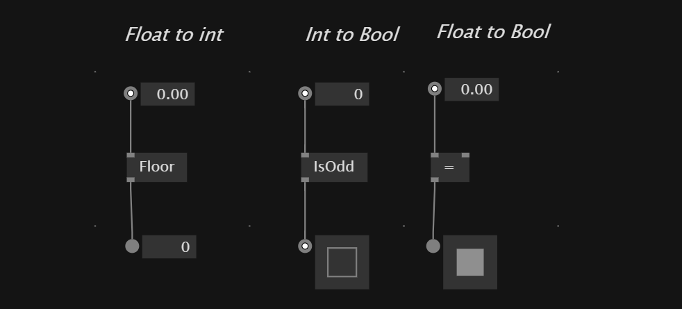
Convert vectors
For creating and manipulating vectors there are two important nodes which are Vector(Split) and Vector(Join)
Vector(Join) - bring values together into a vector
Vector(Split) - split vector into single values
To convert a vector2 into vector3 we first can split up the vector2 in its elements and then plug them into vector3 inputs.
XYz,XyZ,xYZ allow to combine a vector2 and float into a Vector3
Convert colors
We can use a FromHSV node to convert from float to color values or RGBA if you want to set the single color channels.
The ToHSV allows the inverse conversion.
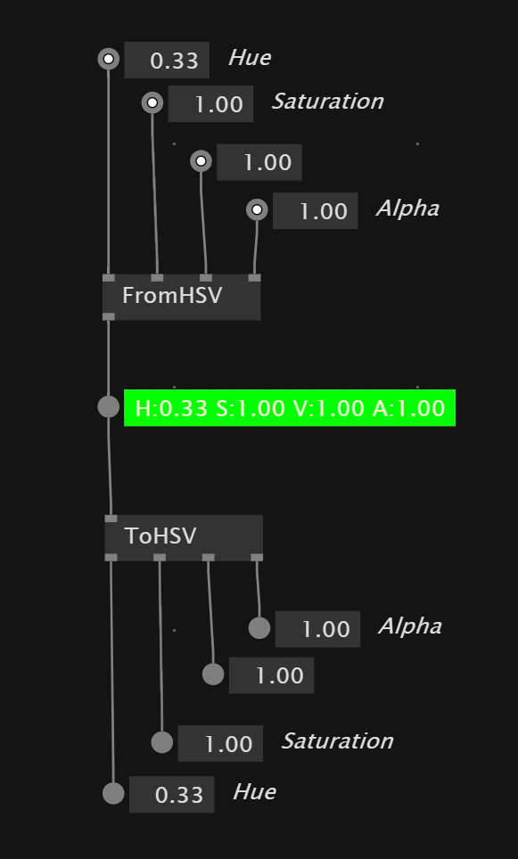
To convert from string to color we can use a fromHex node and use a color hex code string as input. Same inversion of conversion is possible with toHex
Convert string
To convert a data type into a string we need the toString node. It deletes leading and following 0s. If you want to keep use toString(Format) node.
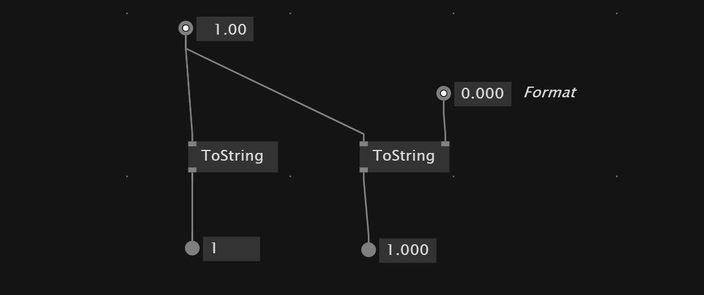
To go from string to number we can use the TryParse node and set the output format.
To convert from a Path to a string we also can use the toString node.
Manipulate Strings
With the + we can concatenate multiple strings together into one string
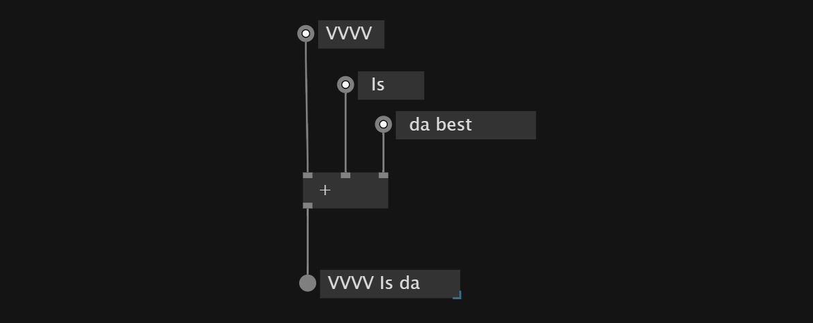
To replace a string inside another string we can use the Replace(String) node
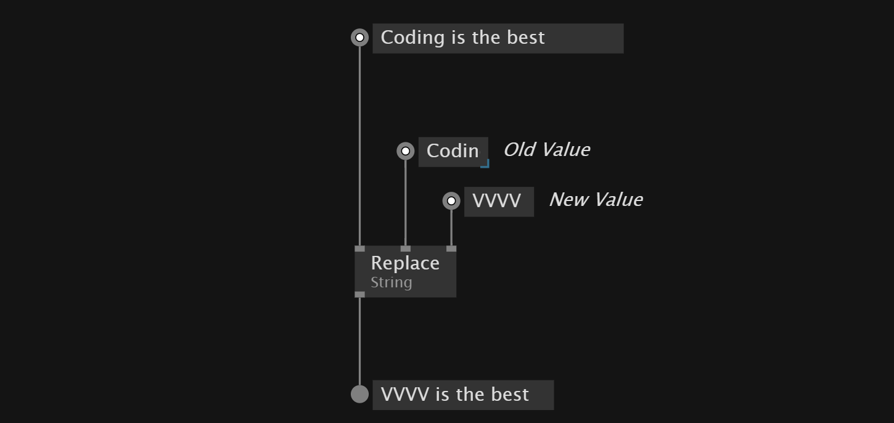
The Insert(String) node lets us insert string information at a specific index.
To remove a specific amount of characters at a position we can use the Remove(String)
ToLower and ToUpper allow us to set the text in upper or lowercase
To check if a string contains another string we can use the Contains(String)
With IndexOf(String) we can evaluate the position of a string inside another string.
To get the Length or the amount of characters inside a string Length(String)
Manipulate Colors
To change color values with the mouse:
- value - right btn + up/down movement
- hue - right btn + left/right movement
- saturation - ctrl + right mouse
- alpha - shift + right mouse
To create a color from floats we can use FromHSV,FromHSL or RGBA(Join) nodes.
To split colors up we can use ToHSV,ToHSL or RGBA(Split)
To just change the alpha of a color values we can use SetAlpha node.
With the Random node we also can set a random color. To get all the colors we set white and black as the color range.
Transform objects
VVVV has two TransformSRT nodes. The basic one and a TransformSRT(Center) node. This applies the transformations relative to an anchor
Output
To show your patch content on a screen we use Renderer nodes. Some libraries have different output nodes like TextureWindow.
The value range in the Renderer is top to bottom -1 to 1 and always stays the same. The left and right values depend on the width of the Renderer
Errors
VVVV shows errors with a read outline.
If you find an error check also if the file contains custom definitions that need to get copied to the document.
Sometimes it can help to use Changed node to see if the changes you want are applied or not.
C
VVVV ulitzies C# libraries under the hood. This allows also the implementation of other c# libraries into vvvv.
Process Nodes
To avoid duplicate code we can use and create Process Nodes, which are sub patches in vvvv. The idea is to bundle nodes together to avoid redundant nodes.
We can create Process Nodes by typing a Name in the Node browser and click on Process.
This creates a definition of a process and allows us to pick the Process Node in the node browser.
To pass information in and out of the node we can add Inputs and Outputs by starting a link from a node inside the Process and click while holding CTRL
Applications vs. Definitions
VVVV patches have a front and a backside of the patch. The application is the patch itself and the backside contains - custom data types - processes - operations
We can go to the definitions page by click on Definitions in the document menu. This is where we should keep our Process nodes